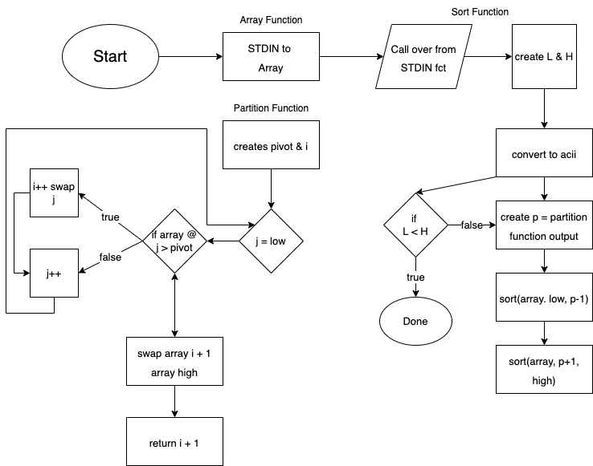

My Team: Drew Eldridge, Devin Wingfield, Nimo Ohayon-Rozanes
Analysis of Sorting Algorithm Execution Time
Austin J. Dlugosch
Allen High School
Computer Science II
Mr. Ben-Yaakov
October 7, 2022
The sort analysis project is based on finding the best algorithms for different sizes and types of inputs, as well as learning the import aspects that affect how each algorithm handles a specific quantity or type of data set. Each of the bubble sort, insertion sort, selection sort, and my own optimal sort and represented on the graph. As for the colors, green represents bubble sort, blue represents insertion sort, red represents selection sort, and yellow represents my own optimal sort. Similarly, the squares represent an ordered input, the rhombuses represent a reverse-ordered input, and the triangle represents a random input. The axes of the graph use a logarithmic scale to elucidate differences between each sorting algorithm at both the smaller and larger amounts of words. Generally, each sorting algorithm remains similar for each type of input until the input exceeds about 100 words. Additionally, each sort typically has the fastest times for ordered, then random, and finally, the reverse-ordered; however, there are algorithms that struggle with inputs that are partially sorted, such as quick sort.
The first sorting algorithm represented is bubble sort. It is plainly visible on the graph as it generally takes much longer than any other sorting algorithm due to its simplicity. With a time complexity of O(n2), the execution time grows very quickly, and it is the only algorithm that is unable to completely sort both a reverse-ordered and a random sorted input of 100,000 words. Bubble sort completes the ordered input sort very fast because it does not perform any swaps; however, for the reverse-ordered input, the number of swaps is equal to the length of the input squared, and the number of swaps for the random input is somewhere between the ordered list and reverse-ordered list.
The second sorting algorithm represented is selection sort. It is located on the graph below bubble sort and above insertion sort. Interestingly, all inputs have similar times. This is because the algorithm loops through the unsorted part of the array to search for the minimum element each time. Selection sort also has a time complexity of O(n2). The degree of sortedness of input has no effect on the time.
The third sorting algorithm represented is insertion sort. It is located below selection sort on the graph. This algorithm is most comparable to how a human would sort a deck of cards. This algorithm also has a time complexity of O(n2). It works by positioning an element from the unsorted portion into the sorted portion by finding its correct location in the list. This means that an ordered input has a similar time to a reverse-ordered input because the element is always inserted into either the end or beginning of the sorted list. A random input into insertion sort is still faster compared to selection sort.
The final sorting algorithm represented is my own optimal sort. It is primarily based on quick sort. It is important to know that as the input is more sorted, the execution time for quicksort increases. Therefore, possibly against the spirit of the challenge, I added a check to see if the input was completely sorted in order or reverse order before running quick sort. However, it is significant to note that the random input’s execution time is not far off the time for the ordered and reverse-ordered inputs.
Overall, the largest takeaway from this experiment was that all sorting algorithms have their strengths and weaknesses, and the best algorithm uses a combination of multiple basic algorithms to speed up the time.